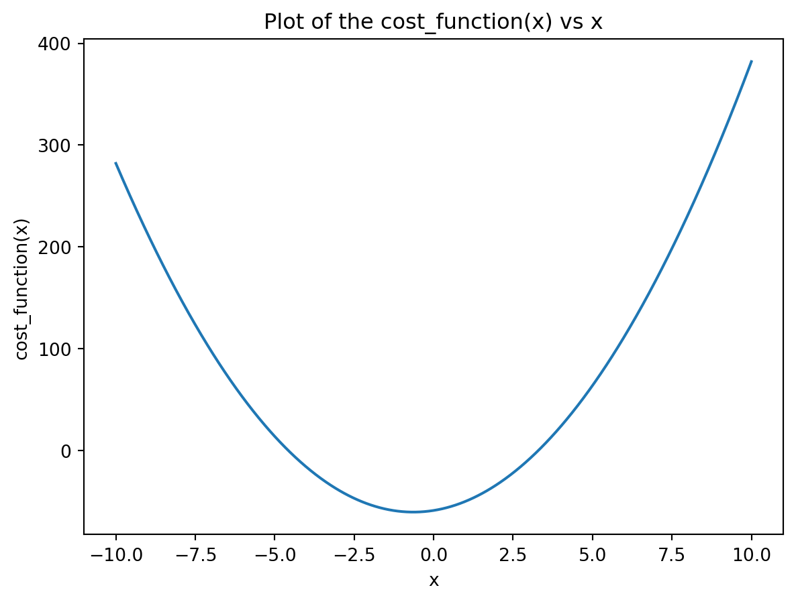

Gradient Descent is an optimization technique used in many Machine Learning algorithms to find the minimum of a function. It does require a convex and differentiable function to ensure we have a minimum. At its core it’s like searching for the lowest valley in a hilly landscape. The idea is to take small steps in the steepest downhill direction until you reach the lowest point.
Gradient Descent is used to find the parameters of the cost function. Think the parameters in the linear regression for instance.
Basic Gradient Descent
One of the main disadvantage of gradient descent is getting stuck to a local minimum or a saddle point and not finding the global minimum.
To perform a gradient descent, we need
a function
its derivative
a starting point (where do we start going down)
the size of steps (aka learning rate)
the number of iterations
optionally, we can set a threshold for when we stop the iterative process of going down the hill.
\[f(x) = 0.91 X^2 + 11x - 7\]
import numpy as npimport matplotlib.pyplot as plt# the original function def cost_function(x): return(3.91*x**2+5*x -59)# the derivative of our function def gradient(x): return(3.91*x+5)cost_function(4.5)# quick visual check x = np.linspace(-10, 10, 1000)y = cost_function(x)plt.clf()plt.plot(x, y)plt.xlabel('x')plt.ylabel('cost_function(x)')plt.title('Plot of the cost_function(x) vs x')plt.show()

We can now put everything together and define our gradient descent function.
def gradient_descent(f, deriv, start, learning_rate, n_iter): x = startfor i inrange(n_iter): grad = gradient(x)# we now update x x = x - learning_rate * grad print(f"Minimum value of x: {x:.2f}")print(f"Minimum value for our Cost function: {cost_function(x):.3f}")gradient_descent(cost_function, gradient, 15, 0.01, 10000)
Minimum value of x: -1.28
Minimum value for our Cost function: -59.000
We could change slightly our code to store the iterations for visualization or analysis.
def gradient_descent(f, deriv, start, learning_rate, n_iter): x = start# initialize a list to store values cost_values = []for i inrange(n_iter): cost = cost_function(x) grad = gradient(x)# update of x x = x - learning_rate * grad# append the value of cost to the list cost_values.append(cost)# print the progressif i %10==0and i <200: print(f"Iteration {i}: x = {x:.4f}, cost = {cost:.4f}")gradient_descent(cost_function, gradient, start = np.random.randn(), learning_rate =0.01, n_iter =1000)
Iteration 0: x = -0.1305, cost = -59.3916
Iteration 10: x = -0.5082, cost = -60.4952
Iteration 20: x = -0.7616, cost = -60.5584
Iteration 30: x = -0.9317, cost = -60.2958
Iteration 40: x = -1.0459, cost = -59.9822
Iteration 50: x = -1.1225, cost = -59.7098
Iteration 60: x = -1.1739, cost = -59.4992
Iteration 70: x = -1.2084, cost = -59.3453
Iteration 80: x = -1.2315, cost = -59.2364
Iteration 90: x = -1.2471, cost = -59.1607
Iteration 100: x = -1.2575, cost = -59.1088
Iteration 110: x = -1.2645, cost = -59.0734
Iteration 120: x = -1.2692, cost = -59.0495
Iteration 130: x = -1.2723, cost = -59.0333
Iteration 140: x = -1.2745, cost = -59.0224
Iteration 150: x = -1.2759, cost = -59.0150
Iteration 160: x = -1.2768, cost = -59.0101
Iteration 170: x = -1.2775, cost = -59.0068
Iteration 180: x = -1.2779, cost = -59.0046
Iteration 190: x = -1.2782, cost = -59.0031
We could visualize how the process happen. We’ll return the cost_values list for that to our function.
# the original function def cost_function(x): return(0.91*x**2+5*x -59)# the derivative of our function def gradient(x): return(0.91*x+5)def gradient_descent(f, deriv, start, learning_rate, n_iter): x = start cost_values = [] x_list = [start]for i inrange(n_iter): cost = cost_function(x) grad = gradient(x) x = x - learning_rate * grad cost_values.append(cost) x_list.append(x)print("Iteration {}: x = {}, cost = {}".format(i, x, cost))return(x_list)x_list = gradient_descent(cost_function, gradient, start =7, learning_rate =0.3, n_iter =5)x = np.linspace(-10, 10, 50)y = cost_function(x)plt.clf()plt.plot(x, y)for i inrange(len(x_list) -1): x1 = x_list[i] y1 = cost_function(x1) x2 = x_list[i +1] y2 = cost_function(x2) plt.plot([x1, x2], [y1, y2], 'ro--') plt.text(x1 +0.5, y1 -2, round(y1, 2))# Label the final cost valuex_final = x_list[-1]y_final = cost_function(x_final)plt.text(x_final, y_final -5, round(y_final, 2))plt.xlabel('x')plt.ylabel('f(x)')plt.title('Gradient Descent for f(x)')plt.show()
Iteration 0: x = 3.589, cost = 20.590000000000003
Iteration 1: x = 1.109203, cost = -29.33336189
Iteration 2: x = -0.693609419, cost = -52.33438352135981
Iteration 3: x = -2.004254047613, cost = -62.03025153122578
Iteration 4: x = -2.9570926926146512, cost = -65.36576903655549